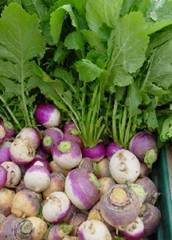
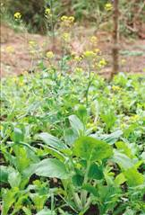
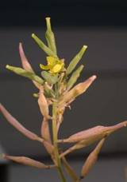
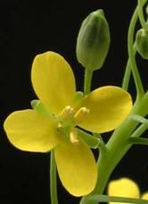
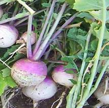
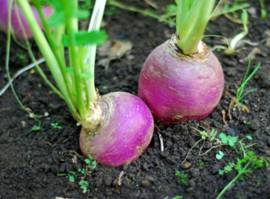

HORT 281 :: Lecture 29 :: ORIGIN, AREA, PRODUCTION, VARIETIES, PACKAGE OF PRACTICES FOR TURNIP

Origin, area, production, varieties, package of practices for TURNIP (Brassica rapa)
Turnip (Brassica rapa) is grown in temperate, subtropical and tropical regions of India. It is extensively cultivated in Bihar, Haryana, Himachal Pradesh, Punjab and Tamil Nadu.
|  |  |
|  |  |
Climate and soil
Cool and moist climate is most favourable for growing turnip. However, it can also be grown where summers are mild. The roots develop best flavour, texture, and size at a temperature of 10°–15°C. The short day length and cool weather favour proper development of roots. The long day and high temperature induce early bolting even without adequate development of roots. In hot weather, roots become fibrous, tough and more pungent. The Asiatic types can tolerate high temperature, while temperate types are quick-growing and flourish well under cool weather.
Turnip can be grown in all kinds of soils but it grows well in loam soil having sufficient humus. The well-drained, sandy loam soil is ideal for its cultivation. The extremely light sandy soil or too heavy soils should be avoided. In such soils either the plant growth is hampered or forked or defective roots are formed which are unfit for market.
Varieties
Turnip varieties are divided into 2 groups- Asiatic or tropical types and European or temperate. These can further be classified on the basis of root shape as well as skin and flesh colour. The varieties recommended for cultivation are:
Early Milan Red Top
Its roots are deep flat with purplish red top and white underneath. The flesh is pure white, well grained, crisp and mildly pungent. The top is very small with 4–6 sessile leaves. It is an extra early and very high yielding variety.
Golden Ball
Its roots are perfectly globe shaped, medium sized and smooth. It has bright, creamy yellow skin and pale amber coloured flesh of fine texture and flavour. The top is small, erect with cut leaves.
Punjab Safed 4
An early maturing variety, commonly grown in Punjab and Haryana. The roots are pure white, round, medium-sized with mild taste.
Purple Top White Globe
It is a heavy-yielder and large-rooted variety. The roots are nearly round, upper part purplish, lower portion is creamy. The flesh is white, firm, crisp and mildly sweet flavoured. Top is small, erect with cut leaves. It is suitable for growing during cooler months.
Pusa Chandrima
Its roots are medium to large, nearly flattened globe to globular, smooth, pure white skin with fine grains. The flesh is sweet and tender. Top medium and leaves not so deeply cut. It is an early maturing (50–60 days), heavy cropper with an average yield of 400q/ha. It is suitable for sowing from October to December in plains.
Pusa Kanchan
the local parent. Its roots can be kept for a longer time than Local Red Round in field without becoming spongy.
Pusa Swarnima
The roots are flattish round with creamy-yellow skin and pale amber coloured flesh of fine texture and flavour. Its top is medium; leaf blade is not so deeply cut. It is suitable for growing from June to October in hills and October to December in plains. It matures in 65–70 days.
Pusa Sweti
Attractive, white roots of Pusa Sweti mature 45–50 days after sowing. A very early maturing variety, it is suited for October sowing in plains.
Snow Ball
This variety is an early temperate type with medium sized small top. Its leaves are erect, cut and medium green. The roots are round, smooth with pure white skin. The flesh is white, fine grained, sweet and tender.
Cultivation
The method of land preparation for turnip is the same as for radish. Asiatic turnips are sown from July to September, whereas European types from October–December in northern plains of India. In hills, sowing time is usually from July–September. Its seeds are sown directly either in lines or on ridges. Normally, flat beds are used for sowing turnip but sowing in low lying area or during the rainy season should be done on ridges. Seeds are sown on ridges or rows 30cm apart while a spacing of 5–7cm is kept within the row. The seeds are sown 1.5cm deep. Seeds can be mixed with sand or ash to facilitate uniform sowing. Generally thinning is done 10–15 days after germination. The plants are spaced 10–15cm apart within rows. Bold seeds germinate better than the medium ones. About 90–95% seeds germinate. Seeds remain viable for 4–5 years under good storage conditions. Seeds take 4–6 days to germinate.
Manuring and fertilization
The quantity of manures and fertilizers to be applied depends upon climate, fertility status, pH level and texture of the soil. The proper time of application is equally important to facilitate optimum intake of plant nutrients for good harvest. Different doses of NPK have been recommended for various agroclimatic zones of India. However, a basal dose of 20–25 tonnes/ha of farmyard manure should be applied at the time of land preparation. This is supplemented by applying 70–100kg of N and 50kg/ha each of P and K. The complete dose of P, K and half of N should by applied before sowing. Phosphatic and potassic fertilizers are applied 7–8cm deep before sowing. The remaining half of N is given in 2 split doses: first at the time of root formation and the second during development of root knobs.
Micronutrient requirement is almost similar to that of radish. Intake of B, Ca and Mo is more in turnip. Therefore, deficiency of these micronutrients is overcome by spraying 1kg/ha of Micnelf MS-24 one or two times depending upon the requirement. It helps to control hollow-stem, pith formation and brown heart in turnip.
Irrigation
Irrigation requirement of turnip is similar to that of radish. This is generally irrigated at 8–15 days interval depending upon weather conditions. The increase in moisture stress drastically affects its yield. Therefore, optimum required moisture is maintained by irrigating the crop at proper time.
Interculture
About 2–3 hoeings are done to keep the crop weed-free and to conserve moisture. The earthing-up is done during second and third hoeings after top dressing of nitrogenous fertilizers to produce better quality roots. Usually 2–3 weedings are done till the crop is harvested. However, at the latter stage of crop growth, the fully developed leaves also restrict the weeds. The pre-emergence application of herbicide, Tok E-25 (Nitrofen) @ 2kg/ha effectively controls the weeds.
Seed production
The method of raising seed crop as well as the techniques of seed production is the same as for radish. The Asiatic turnips produce seed in plains, whereas European ones in hills only. The selected roots are used to prepare the stecklings by pruning the root tip from the base and leave one-third of crown after trimming off the top. These stecklings are transplanted 60cm × 60cm apart in the hills and 45cm × 35cm apart in the plains. An isolation distance of 1,000–1,600m should be kept from Chinese cabbage, mustard and other turnips to avoid contamination by crossing with these crops. Application of 84kg of N, 50kg/ha each of P and K results into good seed yield in turnip. When 70% of the pods turn light yellow, they should be harvested immediately to avoid shattering and damage by birds. On an average, seed yield of 5–6q/ha is obtained.
Harvesting and postharvest management
The fully developed tender roots of turnip are uprooted on attaining the marketable size. Normally the roots are harvested when they are 5–10cm in diameter depending upon the variety. The roots become tough and fibrous if harvesting is delayed. The harvesting should be done in the evening. The yield of turnip varies with varieties as well as growing season. On an average it yields 200–400q/ha.
 Its harvested roots along with the green tops are properly washed to remove the adhered soil. The side roots are trimmed off. These are sent to the market in baskets either along with green tops or after cutting them off near the surface of the crown. After removing old and diseased leaves the foliage is made into bunches for marketing. The roots are sorted into different grades according to colour, shape and size to give an attractive appearance in the market. Then these are immediately transported to the market and disposed off. The roots can be stored safely for 2–3 days under cool and moist conditions. However, it can be stored for 8–16 weeks at 00C with 90–95% relative humidity.
Physiological disorder
Whip tail is caused due to deficiency of Mo. This is more common in acidic soils. Young leaves become narrow, cupped, showing chlorotic mottling especially around the margin, develop deep patches which ultimately affect the root growth. The affected plants are removed from the field during thinning. Further appearance of this disorder can be controlled by liming the soil and bringing the pH to 6.5. However, it is controlled by the application of 1.2kg/ha of sodium or ammonium molybdate.
********
1. Example of an extra early variety of turnip
a. Pusa Swarnima b. Pusa Kanchan
c. Early Milam Red Top d. Purple Top White Globe
2. _________ variety of turnip is a cross between Asiatic and European types
a. Pusa Kanchan b. Pusa Chandrima
c. Pusa Swarnima d. Pusa Sweti
3. Isolation distance practiced in seed production of turnip
a. 700-1000 m b. 1000-1200 m
c. 500-700 m d. 1000-1600 m
4. Deficiency of Molybdinum in turnip is called _________
a. Spongyness b. Witches broom
c. Internal breakdown d. Whip tail
5. Cross pollination in turnip is due to
a. Monoecy b. Male sterility c. Sporophytic self incompatibility d. Gametophylic self incompatibility
| Download this lecture as PDF here |